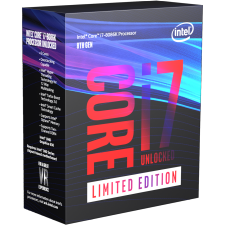
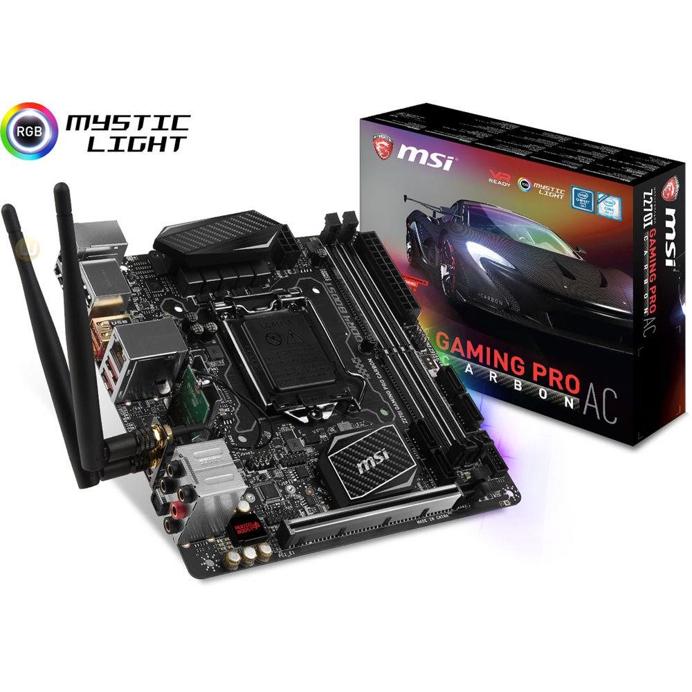
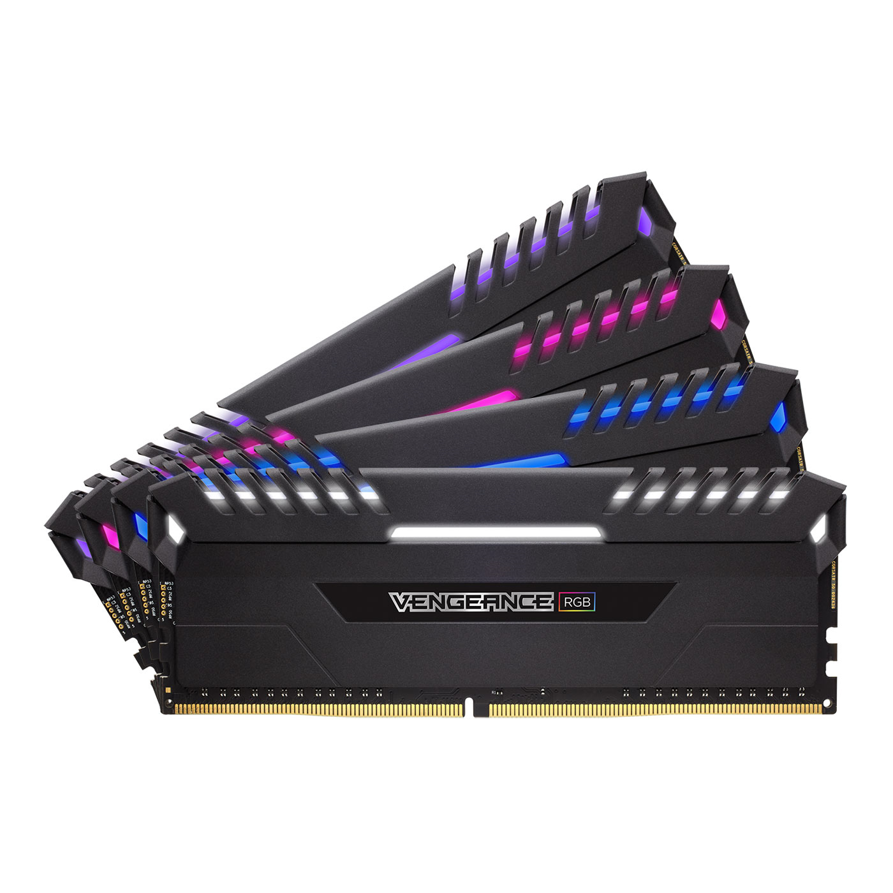
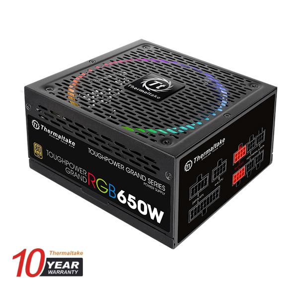
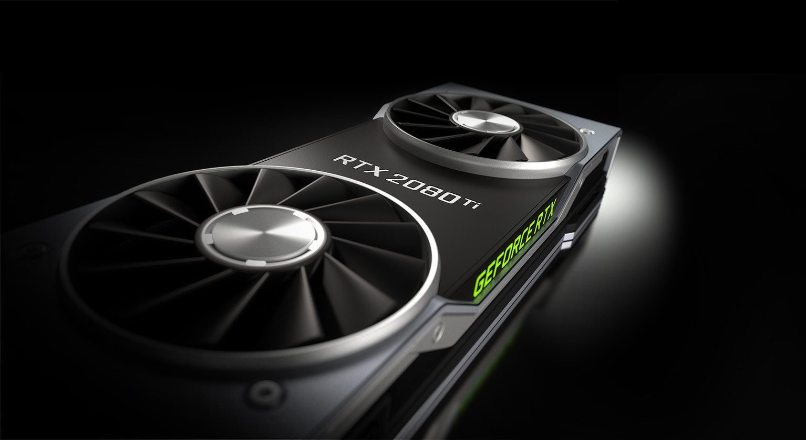
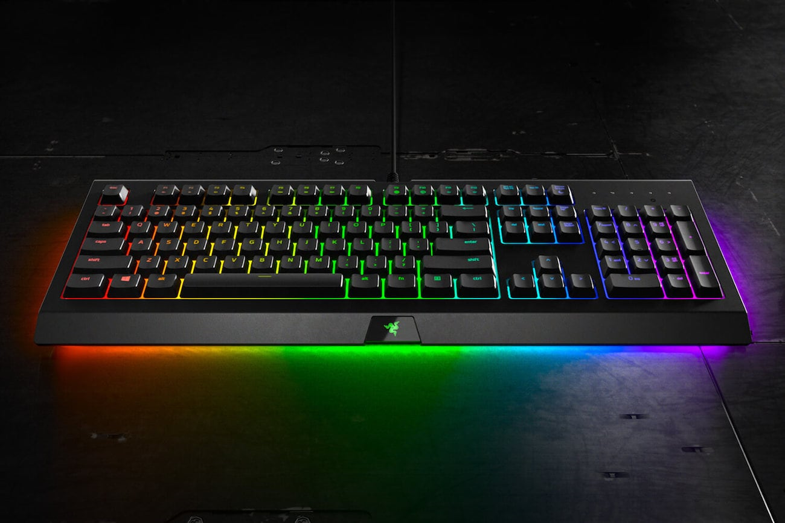
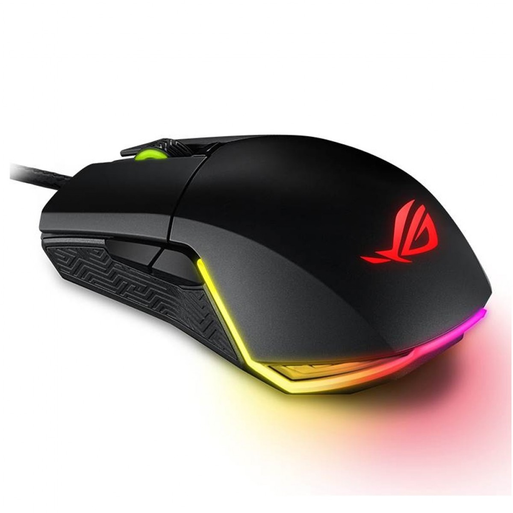
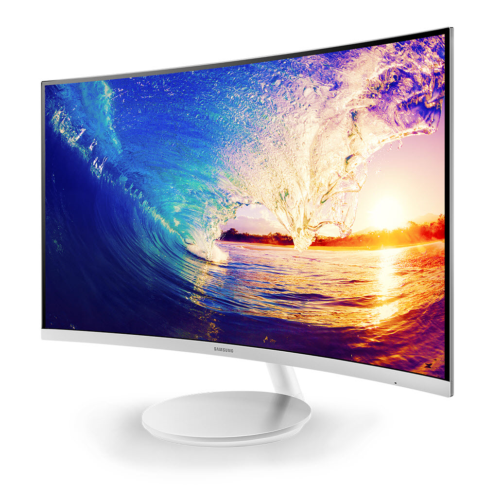

Getting the right build
 Choosing the correct gaming components within your budget and a one that is well suited to your needs and uses is the first task of building a PC. Here, we have enlisted the components you require for your computer as well as finished builds. Feel free to ask questions. Our customer service is up and running 24 hours :)
Choosing the correct gaming components within your budget and a one that is well suited to your needs and uses is the first task of building a PC. Here, we have enlisted the components you require for your computer as well as finished builds. Feel free to ask questions. Our customer service is up and running 24 hours :)
Microprocessor
–It is the most important part of the computer. It is a chip that determines the speed, perfomance,multitasking and rendering capability of the computer.
Motherboard/mainboard
– As the name indicates, this is the electronic centerpiece of the computer: everything else connects to the motherboard. Processor/CPU – central processing unit, the "brain" of the computer, most actual computation takes place here.
RAM
– random access memory, the "short-term memory" of a computer, used by the CPU to store program instructions and data upon which it is currently operating. Data in RAM is lost when the computer is powered off, thus necessitating a hard drive.
Power Supply/PSU
>– Power Supply Unit, converts outlet power, which is alternating current (AC), to direct current (DC) which is required by internal components, as well as providing appropriate voltages and currents for these internal components. 
Storage

- either HDD (Hard disk drive - slower of the two but less expensive) and/or SSD (solid state drive. Very fast but not as cheap) – the "long-term memory" of the computer, used for persistent storage – i.e. the things stored on it remain even when the computer is powered down. The operating system, and all your programs and data are stored here. OSes can be booted and use storage from inexpensive USB Drives, although this is only with extremely lightweight systems.
Optical Drive
 – device for reading/writing optical disks. May read CDs, DVDs, or other optical media, depending on the type. It is essential for installing many operating systems and programs, although the vast majority can be run from USB. It may be able to write some of these discs, as well. Some people like to have two such drives for copying disks.
– device for reading/writing optical disks. May read CDs, DVDs, or other optical media, depending on the type. It is essential for installing many operating systems and programs, although the vast majority can be run from USB. It may be able to write some of these discs, as well. Some people like to have two such drives for copying disks.
GPU/Graphics Card/GPU
– does processing relating to video output. Some motherboards and processors have an "onboard" GPU built in so you don’t need (but may add) a separate video card. Otherwise, you will need a video card. These plug into a slot on the motherboard and provide a place to connect a monitor to your computer.
On top of the internal components listed above, you will also need these external components:
Keyboard
– for typing on. Many motherboards won't even boot without a keyboard attached.
Mouse
– for pointing and clicking. Unless you chose a text-based operating system, you will likely want one of these.
Monitor
– it is a out put device that displays the information after it is processed.They come in many forms, the most common being CRT and LCD.
